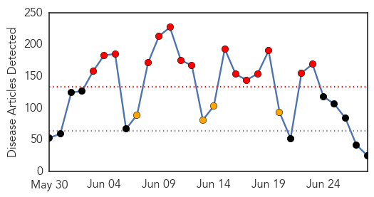
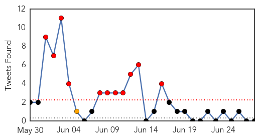
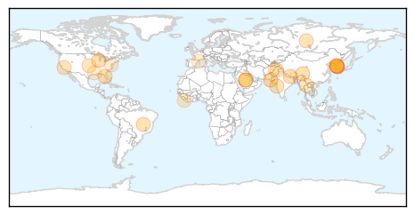

30 Day Trends
Web: 15 alerts, 4 warnings
Twitter: 11 alerts, 8 warnings
Top Articles:
- 0.998
- S. Korea MERS outbreak kills 32nd victim — RT News
- 0.998
- (LEAD) S. Korea reports one more death from MERS with no additional case
- 0.997
- S. Korea fears MERS may have spread to new hospital
- 0.997
- Half of confirmed MERS patients recover
- 0.991
- No new MERS cases reported
- 0.974
- South Korea reports one more death from MERS with no additional cases
- 0.972
- Diarrheal cases on rise in capital
- 0.959
- Alert stays as Seoul marks 32nd MERS death
- 0.917
- Chicago Tribune
- 0.917
- Chicago Tribune
- 0.917
- Chicago Tribune
- 0.907
- Cryptosporidium: How does Florida stack up?
- 0.866
- Because He Wasn't Vaccinated, a 6-year-old from Spain Dies of Diphtheria
- 0.862
- Medifocus Guidebook on Parkinson's Disease
- 0.799
- Pattaya News, Communities, Opinions and much more...
- 0.783
- CDC Issues Guidelines to Help Citizens Fight Swimming Pool Parasites
- 0.660
- Access to Facilities, Liberia’s Health System Plight
- 0.650
- Faulty incinerator at HMC spreads misery, disease
- 0.616
- Half of people who get rabies shots shouldn’t, King County health study finds
- 0.599
- Taxila THQ hospital — a picture of neglect
- 0.599
- Bilawal Zardari visits heatstroke victims in Karachi hospitals
- 0.576
- Barcelona: 6-year-old Unvaccinated Boy in Spain Dies from Diphtheria, First Case Since 1987
- 0.568
- The Caledonian-Record
- 0.564
- Over 1 in 8 Americans Unknowingly Have HIV
- 0.547
- Weeklong Pakistan Heatwave Kills 1,233 People
Top Tweets:
-
No tweets found for Jun 28, 2015
Web/News Articles
Tweets
Article Locations
Article Confidences